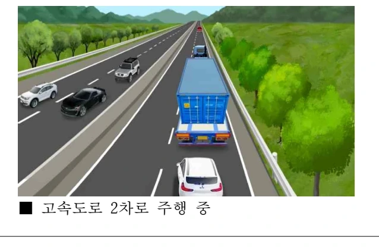

832. Trong tình huống sau, hai cách lái xe an toàn nhất là gì?

- ①Nhấn còi về phía xe kéo (trailer) đang chạy chậm để thúc giục tăng tốc.
- ②Sử dụng làn đường số 1 để vượt xe kéo phía trước một cách an toàn.
- ③Bật đèn xi-nhan trước khi đổi làn.
- ④Chuyển vào làn đường số 1 - làn đường chính, và chạy với tốc độ ổn định.
- ⑤Làn 1 không giới hạn tốc độ tối đa nên tăng tốc để chạy nhanh hơn.
Xem đáp án
Đáp án
② Sử dụng làn đường số 1 để vượt xe kéo phía trước một cách an toàn.
③ Bật đèn xi-nhan trước khi đổi làn.
Căn cứ
Giao thông đường bộ Điều 2 (Định nghĩa) 29. “Vượt” là việc người điều khiển xe ô tô vượt sát xe khác và đi về phía trước xe đó. Điều 60 Luật Giao thông đường bộ. Người điều khiển ô tô phải sử dụng đèn báo rẽ, đèn, còi để vượt xe khác trên đường cao tốc và lái xe an toàn trên làn đường quy định. Theo Quy định thi hành Luật Giao thông đường bộ [Phụ lục 9] tiêu chuẩn cho xe vượt theo làn đường, ô tô con muốn vượt có thể vượt ở làn đầu tiên và làn bên cạnh bên trái của làn quy định. Ngoài ra, khi vượt phải tuân thủ tốc độ cho phép.
Phần căn cứ là bản dịch máy để tham khảo.